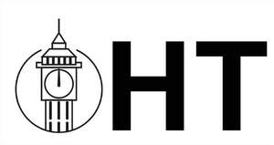

Trade Mark Journal No.2025/021 23 May 2025
UK00004202188 12 May 2025 (3,5,8,10,11,16,18,20,21,35)

- Class 3
- Artificial fingernails; Decalcomanias for fingernails; False fingernails; Abrasive paper for use on the fingernails; Abrasive boards for use on fingernails; Abrasive emery paper for use on fingernails; Fingernail tips; Adhesives for affixing artificial fingernails; Artificial fingernails of precious metal; Fingernail decals; Adhesives for false eyelashes, hair and nails; Artificial nails; False toenails; Nails (False -); False nails; Glue for strengthening nails; Adhesives for artificial nails; Fingernail sculpturing overlays; Lotions for strengthening the nails; Preparations for removing gel nails; Adhesives for fixing false nails; Adhesives for affixing false nails; Nail polish pens; Nail paint [cosmetics]; Powder for forming sculpted finger nail tips; Preparations for reinforcing the nails; Nail polish; Nail varnish; Varnish (Nail -); Nail enamel; Nail polish remover pens; Nail makeup; Nail tips [cosmetics]; Artificial nails for cosmetic purposes; Nail polish top coat; Nail cosmetics; Nail enamel removers; Nail tips; Nail polish removers [cosmetics]; Nail polish removers; Beauty lotions; Beauty serums; Beauty care cosmetics; Beauty creams; Beauty gels; Beauty masks; Masks (Beauty -); Beauty masks for hands; Beauty creams for body care; Facial beauty masks; Beauty balm creams; Beauty soap; Beauty tonics for application to the face; Nail primer [cosmetics]; Nail varnish remover [cosmetics]; Nail glitter; Beauty tonics for application to the body; Distilled oils for beauty care; Nail hardeners [cosmetics]; Beauty care preparations; Nail base coat [cosmetics]; Nail polish remover; Skin, eye and nail care preparations; Nail varnish for cosmetic purposes; Beauty milks; Beauty milk; Nail varnishes; Nail strengtheners; Cosmetic nail care preparations; Cosmetic nail preparations; Nail whiteners; Cosmetic preparations for nail drying; Nail conditioners; Nail enamel remover; Nail enamels; Nail polish base coat; Nail cream; Nail varnish removers; Nail gel; Nail polishing powder; Nail buffing preparations; Fingernail overlay material; Nail varnish removing preparations; Microdermabrasion polish; Cuticle removers; Cuticle conditioners; Cuticle cream; Body cleaning and beauty care preparations; Gel nail removers; Nail hardeners; Nail repair preparations; Nail-polish removers; Polish; Polishes.
- Class 5
- Nail care preparations for medical use.
- Class 8
- Fingernail clippers; Fingernail files; Nail scissors; Electric fingernail polishers; Cuticle scissors; Non-electric fingernail polishers; Nail clippers; Cuticle tweezers; Nail skin treatment trimmers; Nail nippers [hand tools]; Nail drawers [hand tools]; Nail nippers; Nail buffers for use in manicure; Manicure and pedicure tools; Hand tools for use in beauty care; Fingernail polishers, electric or non-electric; Electric and non-electric fingernail polishers; Pedicure sets; Pedicure implements; Electric pedicure sets; Manicure implements; Manicure sets; Manicure sets, electric; Electric manicure sets; Pedicure implements [hand tools]; Nail polishers (Non-electric -); Hand-operated nail clippers for pets; Cuticle nippers; Cuticle pushers; Foot file roller heads for exfoliating skin; Hand tools for exfoliating skin; Nail polishers (Electric -); Nail buffers; Electric nail buffers; Nail files; Nail files, electric; Electric nail files; Nail files, non-electric; Cases for manicure instruments; Foot file roller heads for removing hardened skin; Nail clippers, electric or non-electric; Extractors (Nail -); Nail extractors; Nail punches; Nail pullers, hand-operated; Nail extractors, hand-operated; Nail buffers, electric or non-electric; Roller head refills for electronic nail files; Roller heads for electronic nail files.
- Class 10
- Surgical gloves; Medical gloves; Latex medical gloves; Gloves for massage; Massage (Gloves for -); Latex gloves for surgical use; Rubber gloves for surgical use; Rubber gloves for medical use; Latex gloves for medical use.
- Class 11
- Nail lamps; LED lamps; LED nail drying apparatus.
- Class 16
- Rubber finger tips; Nail stencils.
- Class 18
- Beauty cases.
- Class 20
- Desks; Desks and tables; Desks [furniture]; Desk units; Counters [tables]; Ergonomic chairs for seated massage; Lounge chairs for cosmetic treatments; Furniture; Furniture and furnishings.
- Class 21
- Nail brushes; Cosmetic, hygiene and beauty care utensils; Trays for use in fingernail polishing; Foam toe separators for use in pedicures; Foam toe separates for use in pedicures.
- Class 35
- Retail services in relation to beauty implements for humans; Wholesale services in relation to beauty implements for humans.
London Nails Supply Ltd
Representative: NTI Management Ltd